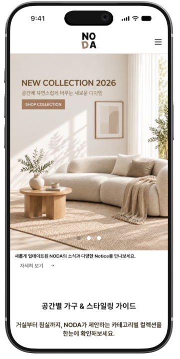

01 / PERSONAL PROJECT
NODA
작은 공간에도,
나다운 취향을 담도록.
1인 가구의 라이프스타일과 공간 취향을 고려한 가구 브랜드입니다. 브랜드 콘셉트부터 상품 탐색과 웹 화면까지 일관된 경험을 설계했습니다.
웹사이트가 천천히 스크롤됩니다. 마우스를 올리면 멈춥니다.
Project Overview
가구 브랜드 NODA의 웹 리디자인과 반응형 퍼블리싱 작업입니다. 제품의 분위기를 이미지 중심으로 전달하고, 사용자가 원하는 상품을 자연스럽게 탐색할 수 있도록 화면을 구성했습니다.
Visual Identity
Mobile
